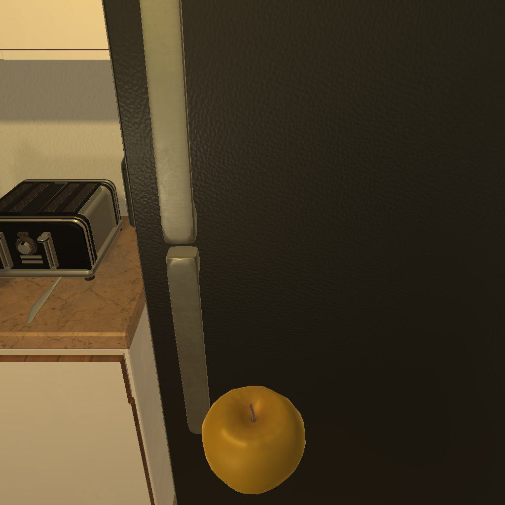

---------------------------------------------------------task: 14---------------------------------------------------------
--------------------------------------------------------------------------------------------------------------------------------------------------------------------
--------------------------------------------------------------------------------------------------------------------------------------------------------------------
Step:--------------------------------------------------------------------------5-------------------------------------------------------------------------------
----------------------------------------
VLM Prompt:
Image1:
Image2:
**Instruction**
1. Analyze the provided images to identify all visible household objects and compare the difference between images (e.h. whether the object is opened or not and taken on hand or not), focusing on those relevant to the task description "put a cool apple in countertop."
2. Use the analysis of images and the task hint "The agent must find an object of the desired type, pick it up, go to a fridge, cool the object with the fridge, then find the correct location to place it, and put it down there. The agent does not need to use the fridge button or open the fridge to cool the object, and the agent just needs to do action that is "cool the object with the fridge"." to answer the question: what is the most reasonable action in the choices for the task description "put a cool apple in countertop"?
3. Decide and write the answer using the template: The answer is: (i): , where i is the real number. If there is no desired object in images, search every place based on **Initial Observation** to find the object. And if no one is exactly correct, choose a similar answer.
**Initial Observation**
You are in the middle of a room. Looking quickly around you, you can see microwave (1), countertop (1-2), cabinet (1-11), diningtable (1), drawer (1-3), sink (1), sinkbasin (1), toaster (1), stoveburner (1-4), fridge (1), coffeemachine (1), garbagecan (1)
**Answer Choices**
(1): go to microwave 1
(2): go to countertop 1
(3): go to cabinet 1
(4): go to diningtable 1
(5): go to drawer 1
(6): go to sink 1
(7): go to cabinet 2
(8): go to cabinet 3
(9): go to sinkbasin 1
(10): go to cabinet 4
(11): go to cabinet 5
(12): go to drawer 2
(13): go to toaster 1
(14): go to cabinet 6
(15): go to stoveburner 1
(16): go to cabinet 7
(17): go to stoveburner 2
(18): go to stoveburner 3
(19): go to stoveburner 4
(20): go to drawer 3
(21): go to cabinet 8
(22): go to cabinet 9
(23): go to cabinet 10
(24): go to coffeemachine 1
(25): go to cabinet 11
(26): go to garbagecan 1
(27): open fridge 1
(28): close fridge 1
(29): put apple 1 in/on fridge 1
(30): cool apple 1 with fridge 1
(31): examine apple 1
(32): examine fridge 1
**Answer**
Let's think step by step by following the instructions.
----------------------------------------
----------------------------------------
Original Response:
First, we analyze the images provided:
Image 1: We can see a countertop with several objects on it, which includes a toaster, two wine bottles, a salt or pepper shaker, and an apple on the countertop floor. There is also a fridge on the right side of the image, which appears to be closed.
Image 2: This image is a more zoomed-in view of the same countertop and fridge. The apple is still on the floor of the countertop, and the fridge remains closed.
Comparing the two images, there is no difference in the state of the objects; none of the objects appear to have been opened or taken in hand between the two images.
Now, referring to the task description "put a cool apple in countertop" and the task hint, the agent needs to pick up an apple, cool it with the fridge without using the fridge button or opening the fridge, and then place it on the countertop.
Based on the **Initial Observation**, the only object relevant to the task description is the fridge, as the agent needs to cool the apple with the fridge.
Given the **Answer Choices**, the most reasonable action to accomplish the task description "put a cool apple in countertop" is to first cool the apple with the fridge, considering the task hint states the agent does not need to use the fridge button or open the fridge to cool the object. Therefore, the agent should perform the action to "cool the apple with the fridge."
The answer is: (30): cool apple 1 with fridge 1.
----------------------------------------
----------------------------------------
>>> Refine Original VLM Response and Get Pure Action: cool apple 1 with fridge 1
----------------------------------------
-----------------------------------------------------------------
Running time: 14.770735502243042 seconds
Total Money: 6.347620000000004
-----------------------------------------------------------------
-----------------------------------------------------------------
Text Observation:You cool the apple 1 using the fridge 1.
-----------------------------------------------------------------
UNSUCCEED